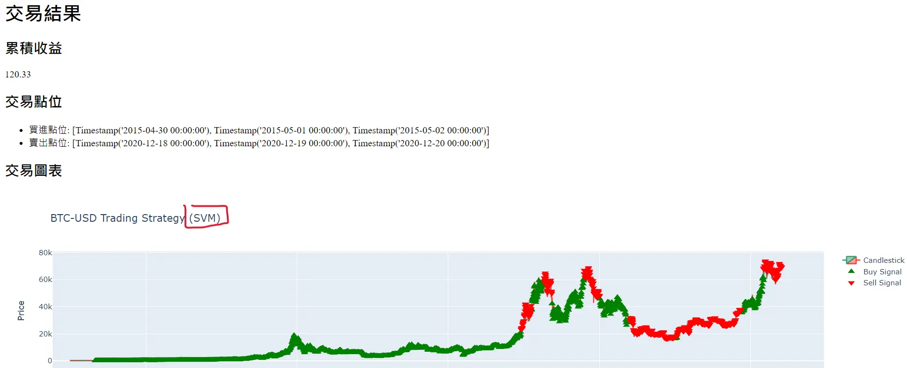

報名編號 ： GAI1-56240332
團隊名稱 : Alfredojayjaylin
參賽成員:林俊傑
在物價飛漲薪水沒漲買房需要不吃不喝至少20年都不一定能買到房
投資理財是能讓口袋的錢變多的方法之一
在忙碌社會裡每天除了上班
下班多少會有其他瑣碎事情要忙
忙完剩下的時間 所剩無幾
晚上很少有多餘心思在去操盤賺外快
更不可能在上班時間 躲在廁所偷偷操盤做交易
更不可能 盯盤盯到結束
這麼耗費心思的外快活
大家也是為了生活而拼命爭取
如果人人有個自動化交易機器人
也許大家生活可以很美好
也許就不會有人會在路上搶劫
也許就不會有那麼多人餓肚子 有一餐沒一餐的生活
也許養老也不會愁吃穿
如果不理財 財就會不理你
所有程式碼由生成式ai產出
結合訓練模型 與 金融交易操盤策略
產出程式碼
在把程式碼放入整合開發環境裡建構環境後再執行
執行後可以顯示操盤累積收益
除此之外可以連網到交易所
讓自動交易機器人進行交易
交易機器人的交易策略
主要分為3種 :
移動平均法,格蘭碧8大法則 和 無任何交易策略 (機器人ai自主學習)
其中這三種交易策略裡面還有細分交易週期
分為: 日內波與波段
基於
黃金交叉與死亡交叉
和
日內波/波段 趨勢追蹤策略
主要概念是利用
短期移動平均線（如5天、20天）和
長期移動平均線（如60天、120天）之間的交叉點做買入,賣出的決策
其中交易週期分為 短週期交易 與 長週期交易
短週期交易採用 日內波套用移動平均法的策略 在一天內多次交易
長週期交易採用 波段交易套用移動平均法 並於每周做一次交易
| 交叉條件 | 交易信號 | 策略說明 |
|---|---|---|
| 當日收盤價超過長期移動平均線（120天）且超過前一天的收盤價1.005倍 | 買入 | 捕捉股價上漲趨勢，並實現利潤。 |
| 當日收盤價跌破長期移動平均線且同時跌破短期移動平均線（5天、20天） | 賣出 | 捕捉股價下跌趨勢，並實現利潤。 |

基於200均線作為參考
金融交易策略分為買進和賣出訊號
買進包括突破、假跌破、支撐和抄底
賣出則有跌破、假突破、反壓和反轉
重要限制包括上升均線不放空、下降均線不作多
並識別移動平均線的支撐、壓力及趨勢線功能
其中交易週期分為 短週期交易 與 長週期交易
短週期交易採用 日內波套用移動平均法的策略 在一天內多次交易
長週期交易採用 波段交易套用移動平均法 並於每周做一次交易
| 訊號 | 條件 |
|---|---|
| 突破 | 移動平均線從下降趨勢逐漸轉為水平盤整或上升，且股價從移動平均線下方突破移動平均線 |
| 假跌破 | 股價往下跌破移動平均線，但隨即又回到移動平均線之上，且移動平均線仍上升 |
| 支撐 | 股價走在移動平均線之上，雖然修正下跌但未跌破移動平均線便再度反彈 |
| 抄底 | 股價急跌，不僅跌破移動平均線，甚至偏離移動平均線下方，但開始反彈趨向移動平均線 |
| 訊號 | 條件 |
|---|---|
| 跌破 | 移動平均線從上升趨勢轉變成水平線或下跌，且股價從移動平均線上方跌破移動平均線 |
| 假突破 | 股價反彈突破移動平均線後，卻隨即下跌跌破移動平均線，且移動平均線仍呈現下降趨勢 |
| 反壓 | 股價持續走在移動平均線之下，即使反彈也無法突破移動平均線 |
| 反轉 | 股價急漲後回落，趨近移動平均線，且遠離移動平均線上方 |
基於無任何交易策略,並移除任何交易指標 並讓 訓練模型
從歷史數據價錢起伏中
從中學習如何交易並以提升交易績效
交易週期 分為
短週期交易 和 長週期交易
短週期交易採用 無任何指標 交易策略 或 交易法則 並 結合ai 訓練模型 在一天內進行多次交易
長週期交易採用 無任何指標或 交易策略 交易法則 結合ai 訓練模型 並在每一週只做1次交易
| 模型 | 描述 | 應用 |
|---|---|---|
| 支持向量機（SVM） | 支持向量機 (SVM) 是一種監督式學習模型，可以用於分類和回歸任務。 | 預測日內波/波段的方向或幅度。 |
| 隨機森林（Random Forest） | 隨機森林 (RF) 是一種集成學習算法，結合了多個決策樹，可用於分類和回歸。 | 對於複雜的非線性關係表現良好。 |
| 深度神經網絡（DNN） | 深度神經網絡（DNN）是一種深度學習模型，具有很強的擬合能力和對於非線性關係的表徵能力。 | 捕捉日內波/波段的複雜模式。 |
| 長短期記憶網絡（LSTM） | 長短期記憶網絡（LSTM) 是一種循環神經網絡的變體，特別適合處理時間序列數據。 | 如果日內波/波段具有時間相依性，LSTM 可能是一個很好的選擇。 |
| 卷積神經網絡（CNN） | 卷積神經網絡（CNN）通常用於圖像處理，但對具有局部相關性的時間序列數據，如天氣預測或股票市場中的技術指標，也可以取得不錯的效果。 | 處理具有局部相關性的序列數據。 |
| 遞歸神經網絡（RNN） | 除了長短期記憶網絡（LSTM) 外，一般的 遞歸神經網絡（RNN）也可以應用於時間序列數據。它的結構比較簡單，訓練速度較快，但對於長期依賴關係的捕捉能力稍遜於LSTM。 | 處理時間序列數據，尤其是長期依賴關係的捕捉。 |
輸入指令全部程式碼由生成式AI ChatGPT產生
建置環境在IDE PyCharm 建置執行


安裝程式需要用到的套件相關
| 套件名稱 | 功能用途 | Pip 安裝指令 |
|---|---|---|
| yfinance | 用於下載歷史金融數據。 | pip install yfinance |
| pandas | 用於數據操作和分析。 | pip install pandas |
| numpy | 用於數值計算。 | pip install numpy |
| plotly | 用於交互式繪圖。 | pip install plotly |
| scikit-learn | 用於機器學習模型和數據預處理，包括建立隨機森林模型。 | pip install scikit-learn |
| alpaca-trade-api | 用於與 Alpaca 交易 API 進行交互。 | pip install alpaca-trade-api |
| tensorflow | 用於構建和訓練神經網絡模型。 | pip install tensorflow |

複製程式碼到IDE裡

導入程式碼後
確認 交易商品,交易區間(起始日到結束日)
在執行程式碼
執行結果:
累積收益代表資產增加了多少%
數字1代表初始值(原資金)
上面數字顯示:104.19 代表增加了103.19%的收益

導入訓練模型
執行結果
| 策略 | 商品 | 移動平均線 交易 | CNN + 移動平均線 | DNN + 移動平均線 | LSTM + 移動平均線 | RF + 移動平均線 | RNN + 移動平均線 | SVM + 移動平均線 |
|---|---|---|---|---|---|---|---|---|
| 日內波 移動平均法 |
比特幣/美元 | 110.84 % | 40,126,310,277,474.74 % | 2.67 % | 1.00 % | 4,577,142,368,825,796,781,240,629,868,888,064.00 % | 1.94 % | 217.07 % |
| 黃金 | 0.96 % | 197.69 % | 1.31 % | 1.00 % | 2,607,073.04 % | 1.18 % | 1.99 % | |
| 聯發科 | 1.04 % | 760,738.97 % | 1.00 % | 1.00 % | 6,847,037,172,784,135.00 % | 1.48 % | 1.00 % | |
| 台積電 | 1.31 % | 28,836.51 % | 1.00 % | 1.00 % | 124,888,609,179.68 % | 1.40 % | 2.88 % | |
| 波段 移動平均法 |
比特幣/美元 | 4.17 % | 1,790,775,665.95 % | 2.64 % | 1.00 % | 68,135,184,439,713.12 % | 2.01 % | 621,086,429.60 % |
| 黃金 | 1.00 % | 48.49 % | 1.33 % | 1.00 % | 1,059.61 % | 1.18 % | 1.39 % | |
| 聯發科 | 1.00 % | 12,857.27 % | 1.00 % | 1.00 % | 20,482,415.56 % | 1.61 % | 510.82 % | |
| 台積電 | 1.00 % | 1,054.54 % | 1.86 % | 1.00 % | 109,361.95 % | 1.51 % | 100.71 % | |
| 日內波 葛蘭碧8大法則 |
比特幣/美元 | 100.28 % | 10,815.66 % | 2.68 % | 1.00 % | 1,510,409,750,252,233,740,299,545,459,294,208.00 % | 1.82 % | 126.50 % |
| 黃金 | 1.96 % | 7.32 % | 1.31 % | 1.00 % | 1,530,006.25 % | 1.19 % | 0.89 % | |
| 聯發科 | 5.22 % | 30.37 % | 1.00 % | 1.00 % | 1,123,565,053,418,907.50 % | 1.59 % | 4.13 % | |
| 台積電 | 5.13 % | 29.87 % | 1.00 % | 1.00 % | 39,513,115,992.20 % | 1.47 % | 2.96 % | |
| 波段 葛蘭碧8大法則 |
比特幣/美元 | 3.14 % | 1.64 % | 2.64 % | 1.00 % | 39,231,531,667,694.25 % | 5.08 % | 22,865,361.69 % |
| 黃金 | 1.00 % | 1.14 % | 1.33 % | 1.00 % | 803.09 % | 1.57 % | 0.50 % | |
| 聯發科 | 1.00 % | 0.90 % | 1.00 % | 1.00 % | 7,562,730.93 % | 2.69 % | 95.58 % | |
| 台積電 | 1.00 % | 0.96 % | 1.86 % | 1.00 % | 70,477.70 % | 3.04 % | 10,356.76 % | |
| 策略 | 商品 | 無設置交易策略 | CNN | DNN | LSTM | RF | RNN | SVM |
| 日內波 無任何交易策略 |
比特幣/美元 | null | 1.83 % | 2.23 % | 2.37 % | 68,318,029,697,406,918,358,896,476,160.00 % | 1.78 % | 2.73 % |
| 黃金 | null | 1.32 % | 1.31 % | 1.31 % | 279,018.80 % | 1.16 % | 1.31 % | |
| 聯發科 | null | 0.77 % | 2.34 % | 1.00 % | 5,104,306,725,747.11 % | 1.43 % | 0.39 % | |
| 台積電 | null | 1.21 % | 0.97 % | 1.00 % | 407,544,271.61 % | 1.27 % | 0.45 % | |
| 波段 無任何交易策略 |
比特幣/美元 | null | 1.78 % | 0.87 % | 0.98 % | 52.37 % | 1.00 % | 0.70 % |
| 黃金 | null | 1.30 % | 0.94 % | 1.07 % | 3.12 % | 1.00 % | 0.92 % | |
| 聯發科 | null | 0.98 % | 0.99 % | 1.00 % | 7.35 % | 1.00 % | 1.00 % | |
| 台積電 | null | 1.05 % | 1.00 % | 1.00 % | 4.79 % | 1.00 % | 1.00 % |

選擇任一交易平台

複製程式碼到IDE編輯器裡
註冊帳號
程式碼要求api及api密鑰 以便連接到平台
註冊好後 到交易頁面上 注意右手邊並往下尋找API KEYS
按下GENERATE NEW KEYS 生產鑰匙 就會生產API 及 相對應API密鑰
拿到API 及 API 密鑰 回到IDE編輯器 放到對應欄位 並執行程式碼

執行後 程式就會開始自動依相對應的策略進行買賣